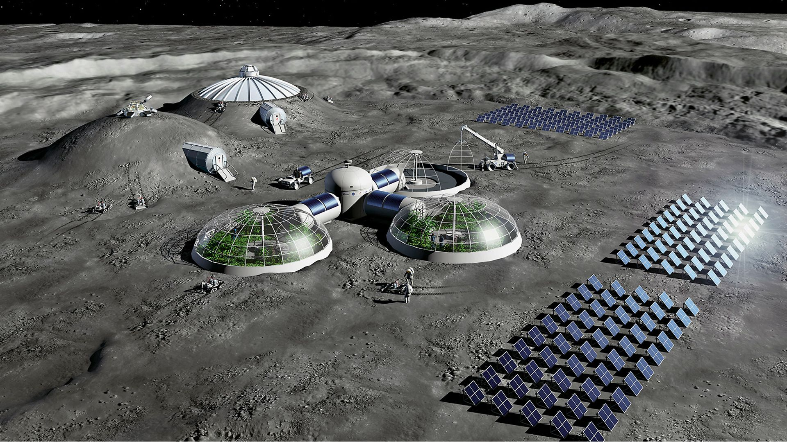
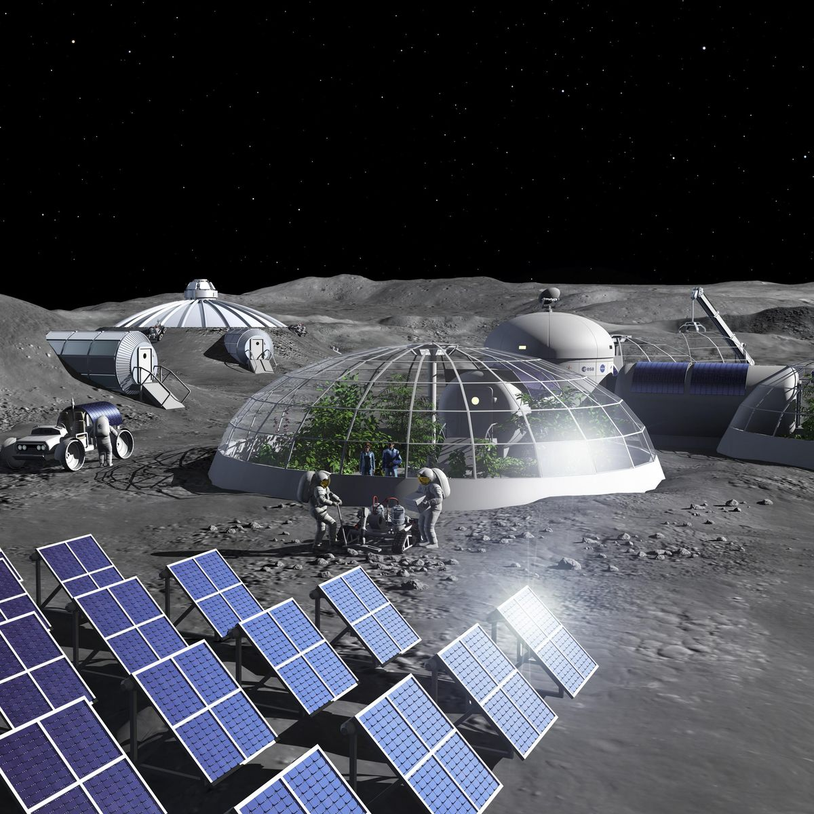

Impactos do projeto
10
semanas simuladas
30
questões técnicas
4
módulos principais
Impactos educacionais e sustentáveis
Operação Ktisis apresenta uma simulação de gestão de recursos em uma base lunar. O jogador toma decisões sobre energia, água, oxigênio e alimentos para manter a missão em funcionamento.

ODS relacionadas ao projeto
O projeto se relaciona com os ODS ao transformar sustentabilidade em decisões de jogo. Recursos limitados, infraestrutura e consumo aparecem nas perguntas, nos módulos e na simulação semanal.
ODS 12: Consumo e Produção Responsáveis
Aborda o uso responsável de minerais, componentes e biomassa. O jogador precisa produzir recursos sem desperdiçar materiais essenciais.
ODS 4: Educação de Qualidade
As perguntas transformam conteúdo técnico em prática. O jogador aprende enquanto usa o conhecimento para avançar na missão.
ODS 6: Água Potável e Saneamento
O reciclador representa a importância do reuso da água em ambientes com recursos limitados.
ODS 7: Energia Limpa e Acessível
Os painéis solares mostram o papel da energia limpa e da gestão do consumo para manter a base ativa.
ODS 9: Inovação e Infraestrutura
A base depende de módulos integrados, manutenção e infraestrutura para funcionar com estabilidade.
Aprendizagem no jogo
O jogo organiza a aprendizagem em etapas simples: responder, receber recursos, escolher melhorias e acompanhar os efeitos na base.
Perguntas técnicas
Questões sobre energia, água, hidroponia, regolito, reciclagem e suporte à vida.
Recursos do jogo
Respostas geram minerais, componentes e biomassa usados na construção dos módulos. Acertos rendem mais recursos.
Construção de módulos
O jogador decide quais sistemas melhorar de acordo com as necessidades da base.
Efeitos na base
Cada semana avalia consumo, produção e equilíbrio dos recursos disponíveis.
Módulos sustentáveis
Cada módulo representa uma solução essencial para manter a base em operação. A proposta mostra como produção, consumo e eficiência precisam funcionar em conjunto.
Painel Solar
Gera energia para os sistemas da base e reforça a importância do consumo planejado.
Reciclador de Água
Reduz perdas e mostra o valor do reaproveitamento em ambientes fechados.
Gerador de Oxigênio
Mantém o suporte à vida e exige energia disponível e manutenção constante.
Estufa Hidropônica
Produz alimentos por hidroponia e depende de água, energia e biomassa.

Missões reais
Tecnologias de missões espaciais
Missões espaciais exigem soluções para comunicação, automação, monitoramento e segurança. Muitas dessas tecnologias também ajudam em problemas reais da Terra.
Comunicação e navegação
Satélites apoiam localização, transmissão de dados e conexão em regiões afastadas.
Observação da Terra
Imagens orbitais auxiliam agricultura, clima, prevenção de desastres e monitoramento ambiental.
Robótica autônoma
Robôs espaciais inspiram equipamentos usados em inspeção, mineração e áreas de risco.
Materiais e segurança
Ambientes extremos impulsionam sensores, materiais resistentes e sistemas com redundância.
Relevância do projeto
O tema espacial ajuda a discutir sustentabilidade de forma prática. O jogo aproxima educação, tecnologia e uso responsável de recursos.